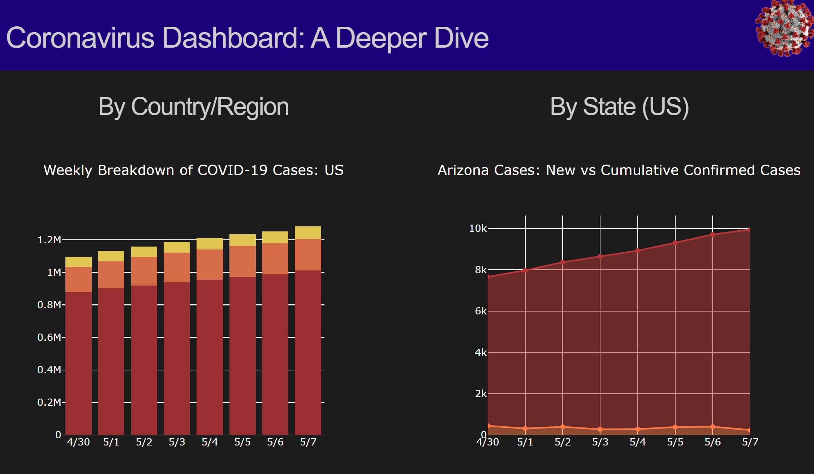

A Dash of Coronavirus Data
As I’m writing this post, COVID-19 is still rapidly spreading with cases exponentially increasing each day in the United States. It almost feels surreal at this point that - who knew that we would experience a worldwide pandemic like this in our lifetime?
With COVID-19 still being a relevant threat to public health, there’s still a need and desire for visualizing the data available. In a previous blog post, I mentioned that the Johns Hopkins Coronavirus data I had processed using PySpark would be placed into my own dashboard. Well…the dashboard is now finished - take a look at this beauty!

This dashboard was created using a library called “Dash” in Python. What is dash, you ask? Well - keep reading, and I’ll tell you all about it! 😄
About Dash
Dash is a Python library that is composed of framework to put together a web application or dashboard. Dash is open source, but can also be used within an enterprise as well.
Why Dash?
I was initially planning to create a quick Tableau dashboard to visualize this COVID-19 data, since I had read online that Tableau could be used alongside S3 (where the data is stored). However, it costs money to use Tableau…and while there was a free trial I could have used as an educator, I wanted to learn a method of creating dashboards I could do repeatedly and affordably at the price of “free”.

After doing a quick Google search on how to create dashboards using Python, I learned about Dash…and I was automatically on board!
Starting With Dash
To get started on using Dash, there were a series of YouTube videos by Codebliss that provided a general tutorial for getting started. The video series is in six parts, and the first part can be accessed here.
This video series was very helpful for a beginner getting familiar with Dash, as well as providing a starting point for a final product.
An IDE For Dash
Previous Python projects of mine have mostly been completed using Jupyter and Spyder until this project came along. Due to the nature of Dash creating a web application, running your code serves a website locally so changes made can be continuously seen. This means that some programming environments might be better suited to do this than others.
Through watching the YouTube video series by Codebliss, I noticed he was using PyCharm and decided to give that environment a try. It turns out that PyCharm is actually a VERY popular coding environment for Python! In fact, DataCamp cited PyCharm as one of the top IDEs for 2019.
One thing I really liked about PyCharm was that it had the ability to host a Dash web application locally and keep it running, as well as some of the debugging features it offered. One downside to using PyCharm was that I was using a community version, which meant that many features would have cost money. One featured I missed was being able to divide code into cells - in PyCharm, all code needs to be run at once, while in an editor like Jupyter or Spyder, code can be chunked into cells. Having these chunks allows for smaller scale testing of code, which I sorely missed. With that being said, I’m glad that I had the opportunity to learn about PyCharm through this project!
Dash Documentation
Dash documentation and tutorials were a godsend for figuring out how to set up a dashboard using Dash. The trickiest parts were establishing the initial layout, as well as the concept of callbacks. Callbacks in code are when a selection is made by a viewer, and the code changes as a result. For example, my dashboard had a dropdown menu for selecting a country. Once a country was selected, graph data would change.
This project would have been near impossible without the documentation that Dash provided with example code. With this in mind, the documentation became less useful as the dashboard became more complex. A word of advice for anyone learning dash: Don’t be afraid to try things and fail.
Dash and Dashboard Style
When starting to create a dashboard using Dash, your initial product is going to look ugly. Like…REALLY ugly.
It’s not worth getting discouraged about! Luckily, there are plenty of resources to be able to make the dashboard look nice, with all of these resources being written in CSS. Almost every resource I looked at for Dash layouts included an external CSS stylesheet from codepen.io, which can be viewed here. This style sheet was very useful, as it created a basic structure of twelve columns on your dashboard, which made formatting exponentially easier.
As I was creating my dashboard, I realized I was looking to personally customize some aspects of my dashboard. For example, I wanted to try my best to make the webpage in dark mode. To do this, it actually became useful to start experimenting with writing out my own CSS styling on top of the external stylesheet.
Dash Syntax = MySpace
One thing that’s cool about Dash is it’s essentially a Python wrapper for HTML code. In other words, you write in Python syntax, but the output is HTML. This has been especially fun, as I’ve been able to bring back my HTML experience from the days of MySpace into this project!
This project honestly gave me a flash back to the days of Myspace. A memorable experience as a teenager in the mid-2000’s was updating the format behind my MySpace profile using HTML. Unsurprisingly, these memories helped me problem solve through this Dash project! For example, I was able to remember that BR with carrots on both ends (<>) would add a line of space in HTML, and figured out that “html.Br” in Dash was able to achieve the same thing.
Visualizations and Plotly
A nice aspect about using Dash is the relationship it has with the Plotly library. Plotly is a graphing library in Python that has origins from R Studio. Plotly can flexibly create many different kinds of plots, and feature the ability for viewers to interact with the plots.
One of the hardest parts about using Plotly was figuring out how to precisely customize each aspect of the chart. How do I change the background color, the plot color, or the font color? How do I remove the legend of a graph? How do I make a stacked bar chart? How do I set a title? Once a single graph is done, however, each subsequent graph gets easier 😄
Hosting the Site
I had read about a few ways to host and deploy the dashboard I made, with the big ones being through Heroku or AWS Elastic Beanstalk. However, I ultimately went with Python Anywhere because I found this tutorial that was pretty concise about how to precisely deploy the Dash app on the Flask framework. I’d like to learn how to deploy something on Heroku at some point, but for this project I was looking for something quick to learn so I could have my dashboard deployed quicker!
Closing Thoughts
If you’d like to take a look at my deployed dashboard, you can Click Here to take a look! Exploring this data is very interesting, but please keep in mind that these numbers may not be perfectly representative of the disease…just what we have data of.